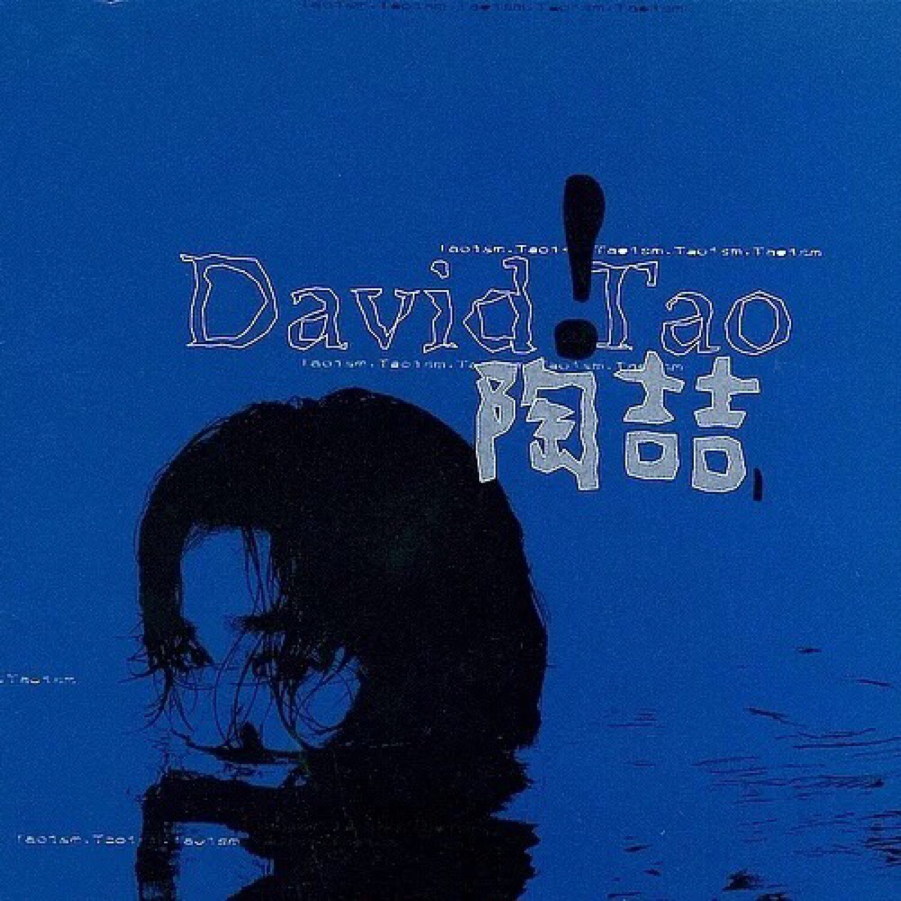

.jpg) |
 | .jpg) |
| 陶喆（David Zee Tao），1969年7月11日出生于中国香港，祖籍上海 ，华语流行乐男歌手、音乐人，毕业于加利福尼亚大学洛杉矶分校。 1993年以音乐制作人身份进入音乐圈，之后为张信哲、陈淑桦、郑中基等歌手制作专辑、创作歌曲 。1997年转型成为歌手，发行首张专辑《David Tao》，将R&B曲风的音乐引入中国台湾流行乐坛。1998年获得第9届台湾金曲奖最佳新人奖、最佳唱片制作人奖 。1999年凭借专辑《I'm OK》获得第11届台湾金曲奖最佳专辑制作人奖 。2002年发行融合多种音乐风格的专辑《黑色柳丁》 。2003年获得第25届十大中文金曲全国最受欢迎男歌手银奖 ；同年举行“Soul Power”演唱会 。2005年获得第5届全球华语歌曲排行榜最佳制作人奖 。 |
《太平盛世》是陶喆在2005年1月21日发行的国语专辑，共收录了13首歌曲。 该专辑获得华语音乐传媒大赛中获最佳录音奖、第17届台湾金曲奖最佳国语流行音乐演唱专辑奖、港台地区最佳专辑奖 |
《太美丽》是陶喆2006年发行的音乐专辑 [1]。作词人包括娃娃、葛大为等人，作曲人包括陶喆等人。 [10] 2007年，陶喆凭借该专辑在第七届全球华语歌曲排行榜颁奖典礼上获得最佳男歌手、年度最受欢迎金曲、最受欢迎男歌手前五强、最佳专辑、最受欢迎对唱歌曲、最佳制作人六个奖项，并且在Hito流行音乐奖上获得Hito制作人、Hito作曲人、听众最爱歌曲、年度10大金曲四个奖项 [2]。、 |